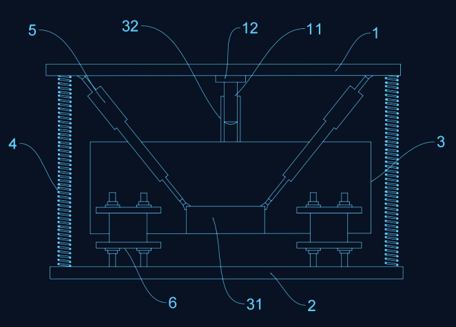
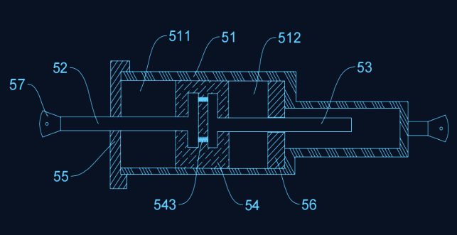
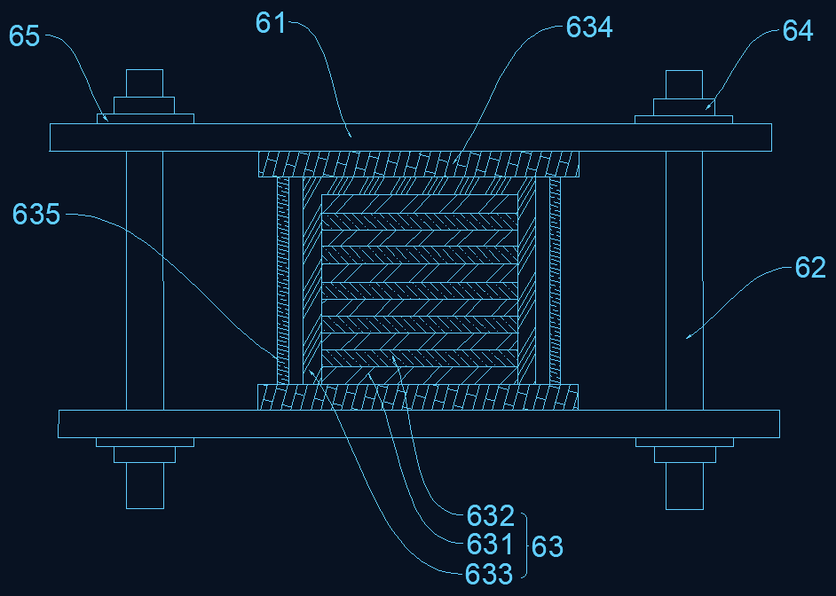
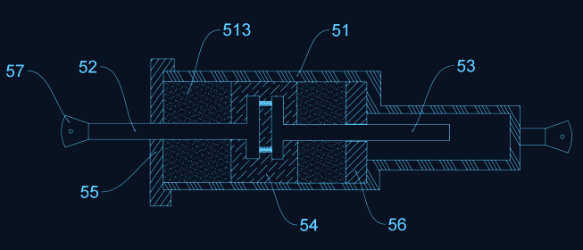
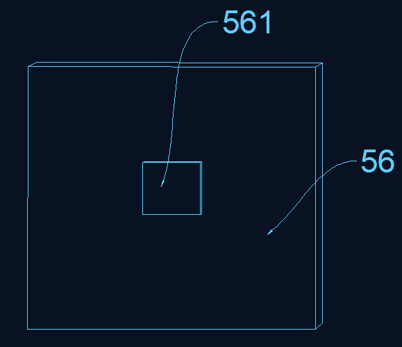
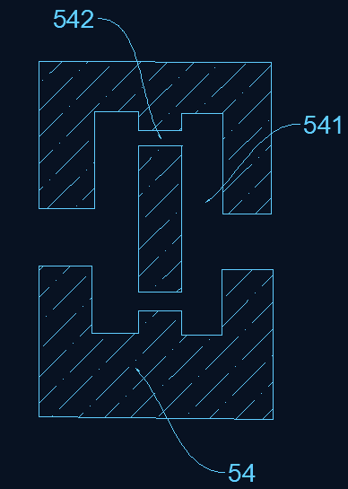

DEV_01 // VIB_CTRL · 2022 年度创客项目 · 结题答辩 2023.05
XXAAMACHINERY VIBRATION ATTENUATION & INTELLIGENT CONTROL
源自工厂生产实际的机械设备振动减轻装置：首次将建筑结构减振理论移植到机械领域，以
减震弹簧 + 粘滞阻尼器 + 隔震支座三级体系耗散振动能量——阻尼粒子碰撞将动能转化为热能，
从源头镇住设备振动，保护机器、延长寿命、保障交付。
3级
减振体系 SPRING / DAMPER / BEARING
4组
对称布置粘滞阻尼器 VISCOUS DAMPERS
KE→HEAT
阻尼粒子耗能原理 PARTICLE DAMPING
01
课题背景 · 市场问题
PROJECT SOURCE // FACTORY PAIN POINTS
来自生产一线的真实需求
本项目需求直接来自生产机械设备的企业客户。随着机器使用时间的增长，机械设备出现振动的频率和振幅逐步增加，
且常会毫无征兆地突然损坏、无法恢复作业——这不仅增加企业生产成本，更严重威胁产品按期交付。
机械振动降低机器的动态精度和性能，使机器产生交变载荷，导致使用寿命降低甚至酿成灾难事故。
当代工业特别是高端制造业快速发展，机械设备减振要求越来越高：自上世纪 90 年代减振产品出现以来，一直未得到充分发展，
设计制作一款性能可靠的机械设备振动减轻装置，具备明确的市场价值。
技术路线 · 被动控制 × 结构创新
振动控制分为主动与被动两大类。主动控制成本高、系统复杂；本项目选择被动控制 + 结构创新路线，将建筑结构减振理论创造性地移植到机械设备领域：
CONVENTIONAL
传统被动控制
减小激励（动平衡）、避开共振区、增加系统阻尼、附加减振器——振动无法完全消除，宽频激励下易产生新共振。
THIS PROJECT
隔震支座 + 粘滞阻尼器
借鉴建筑结构减振理论：隔震支座延长系统周期、粘滞阻尼器耗散能量——二者组合对设备减振有立竿见影的功效。
经营隐患BUSINESS RISK
设备突然损坏导致非计划停产，订单交付延期，客户信任受损，企业蒙受直接经济损失。
安全隐患SAFETY RISK
大型高速旋转机械动态失稳引发的事故多次发生；振动剧烈上升时，大型发电机组等曾酿成重大灾难。
精度隐患PRECISION LOSS
振动影响加工零件质量，产品无法达到精度要求；高密度机械加工对机床振动有严格限制。
寿命隐患LIFESPAN LOSS
振动带来额外动态负载，交变应力持续损耗部件寿命——振动频率与振幅随使用时间逐步增加。
02
装置构造 · 三级减振体系
STRUCTURE // 3-LEVEL ISOLATION SYSTEM
PATENT FIG.1

FIG.1 整体结构剖视图 · 平台 1 / 底座 2 / 减震箱 3 / 减震弹簧 4 / 粘滞阻尼器 5 / 隔震支座 6
FIG.2

FIG.2 粘滞阻尼器剖面
FIG.6

FIG.6 隔震支座层叠结构
LV1
减震弹簧 · 初级隔振SPRING ISOLATION
四根减震弹簧布置于平台与底座四角，隔绝竖向振动传递；导向柱穿设导向管内对平台限位，避免升降过程中位置偏移，橡胶垫进一步提升缓震性能。
1平台4减震弹簧11导向柱12橡胶垫32导向管
LV2
粘滞阻尼器 · 核心耗能VISCOUS DAMPER
四组阻尼器铰接于固定块与平台四角之间；气缸内阻尼粒子随活塞往复与缸壁高频碰撞，将设备振动动能转化为热能——振动越剧烈，碰撞越频繁，耗能效率越高。
51气缸513阻尼粒子54活塞头543安装弹簧57耳环
LV3
隔震支座 · 层叠缓冲ISOLATION BEARING
钢板与橡胶板相间隔层叠、外围包覆层包覆，限位板间橡胶管连接——橡胶板与橡胶管共同缓冲设备震动，固定板使隔震组件在限位板间安装稳固。
631钢板632橡胶板633包覆层634固定板635橡胶管
03
核心机构 · 阻尼粒子耗能
SECTION VIEW // LIVE PARTICLE PHYSICS
UNIT VD-05 // SECTION A-A
碰撞频率 -- /s
腔体温度 36.0°C
活塞行程 ±0.0 mm
累计耗散 0 J
STATE DAMPING
为什么是阻尼粒子？
传统粘滞阻尼器依靠硅油通过阻尼通道产生阻尼力。本项目在气缸的第一腔体 511 与第二腔体 512 内
创新注入阻尼粒子 513：设备振动时活塞头 54 在气缸内滑移，粒子与缸壁、粒子与粒子之间高频碰撞——
将振动动能直接转化为热能。振动越剧烈，碰撞越频繁，能量转化效率越高，实现"越振越稳"的自适应耗能。
四步能量转化链
活塞往复滑移
安装弹簧 543 缓冲双活塞杆相对位移
粒子高频碰撞
腔体 511/512 内粒子与缸壁激烈互撞
动能 → 热能耗散
振动能量被彻底转化，设备恢复平稳
04
减振模拟器 · 实时对比
SIMULATION // FORCED VIBRATION RESPONSE
受迫振动响应实验台
SIM // SDOF-DAMPED · RK4 SOLVER
CH-1 RAW · 设备原始振动激励
CH-2 DAMPED · 减振后设备响应
实验指南：拖动"激励频率"扫过 1.00 可观察共振峰——无阻尼时振幅放大系数趋于无穷；
增大阻尼系数 C 可有效压低共振峰、使响应相位滞后趋于 90°；关闭"粘滞阻尼器"与"隔震支座"开关，
CH-2 波形将恢复为原始等幅振动——直观体验三级减振体系的价值。
05
工程图纸 · 专利构型
BLUEPRINTS // PATENT FIG.1-6
FIG.3

阻尼器活塞组件FIG.3
FIG.4

活塞头结构FIG.4
FIG.5

安装腔与缓冲弹簧FIG.5
06
结题成果 · 项目信息
CONCLUSION // 2023.05 DEFENSE
结题结论 · 实用性强
项目来源于工厂生产实际，装置减震效果明显且易复制、可装配性强；可根据工厂实际组装不同大小的固定块和减震箱，对不同尺寸和频率的需减振设备均可适用——经过与需求企业充分沟通验证，符合生产实际。
专利申请 ·《一种机械设备减震装置》
完整覆盖平台、底座、减震箱、减震弹簧、粘滞阻尼器、隔震支座六大部件与 31 个附图标记的专利交底书（V2 修订稿），含整体结构、阻尼器、活塞头、隔震支座等 6 幅结构图纸。
推广思路 · 定制化配套
面向工厂实际生产中存在机械振动现象的机电设备作定制化配套：通过隔震支座 + 粘滞阻尼器的结构创新原理达到减振目的，为企业解决设备振动的后顾之忧。
项目档案 PROJECT FILE
PROJECT
机械设备振动减轻和智能控制装置
2022 年度第一批创客项目
MENTORS
柯工 · 后勤基建处
Z博士 · 智能制造研究院
TIMELINE
2022 立项 → 2023.05 结题答辩
OUTPUTS
结题报告 · 样机演示视频 · 专利申请《一种机械设备减震装置》